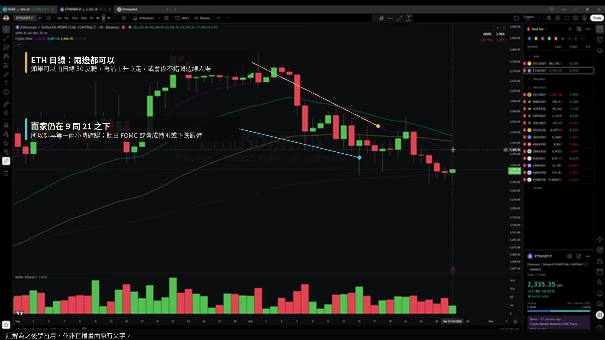

概要
收結前把加密同聽日 FOMC 放在一齊
1:44:44 佢話加密都處於幾有趣嘅位置，兩邊都可以。有啲較強品種已經到 21。如果加密能夠做出實在突破，例如由日線 50 EMA 反轉，再沿上升 9 走，並且由下降 9 EMA 收復，或會係一個頗好嘅週線入場。但而家肯定仍在 9 同 21 之下，所以兩邊都有可能；加密相關股票偏弱。佢會再監察至少一兩小時，等向上確認，或者等弱勢出現。自己而家有少少猶豫。覺得今日直播就到呢度，有啲悶，只係睇住等。聽日有 FOMC，或會成為呢輪跌勢嘅轉折，或者觸發向下跟進。
畫面主要係 ETH 日線。Whisper 把 cryptos 聽成 Kripplus。
圖一
ETH 日線：兩邊都可以
直播 1:45:20

原話
I think crypto is also at pretty interesting levels. You could go both ways. Some stronger names are at like the 21. Like if cryptos can do a solid breakout, like a reversal from the 50 EMA on daily, and then riding the rising 9, if it can recover from the declining 9 EMA, that could be a pretty good weekly entry. But right now it's definitely still under both the 9 and 21. I think they could go both ways, and I don't know, but the crypto stocks are weak. I'll keep monitoring, maybe at least an hour or two, try to wait for any confirmation on the upside, or if we're seeing some weakness coming in. I am a little indecisive right now.
我覺得加密都處於幾有趣嘅位置，兩邊都可以。有啲較強品種已經到譬如 21。如果加密能夠做出實在突破，例如由日線 50 EMA 反轉，再沿上升 9 走，如果可以由下降 9 EMA 收復，噉或會係一個頗好嘅週線入場。但而家肯定仍在 9 同 21 之下。我覺得兩邊都可以，我唔知，不過加密相關股票偏弱。我會再監察，可能至少再一兩小時，等向上確認，或者等見到弱勢出現。我而家有少少猶豫。
Whisper 把 cryptos 聽成 Kripplus。畫面係 ETHUSDT 永續合約日線；代碼同交易所名稱只當圖上文字。講到 crypto stocks 時未另開股票圖。
點樣讀
「兩邊都可以」要同入場條件一齊讀：理想情況係日線 50 反轉，再收復並沿上升 9 走；而家仍在 9 同 21 之下，所以未當確認。
圖例冇印週期。9、21、50 以口中為準。
原話
I think that will be the end of the stream. It's too boring, just watching and waiting. And I think we will see, maybe like tomorrow, tomorrow we got FOMC, and could be a turning point of this downtrend, or like a trigger for a downside follow through. Thank you guys for coming, see you in the next one.
我覺得今日直播就到呢度。有啲悶，只係睇住等。我想我哋會睇到，或者聽日，聽日有 FOMC，或會成為呢輪跌勢嘅轉折，或者觸發一次向下跟進。多謝大家到來，下次再見。
點樣讀
FOMC 被講成兩種可能：跌勢轉折，或者下跌跟進。佢冇預先揀邊邊。
收結時繼續用同一張加密日線，冇另開 FOMC 專圖。
附註
注意事項
- 講加密時亦掃過 XRP／SOL 等合約，只係快速翻圖，重點用 ETH 日線出圖。
- 「至少再等一兩小時」只係當時嘅等待計劃，唔當可複製持倉時限。